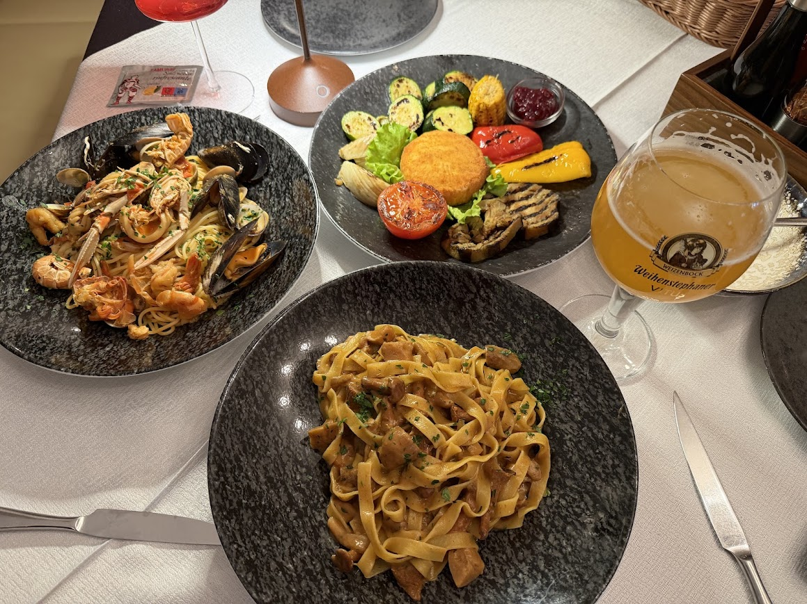
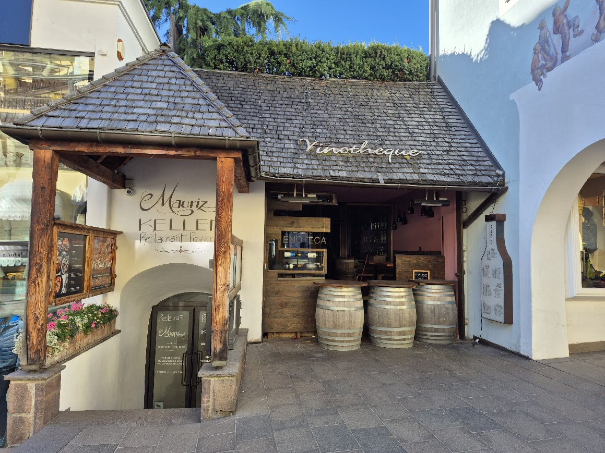
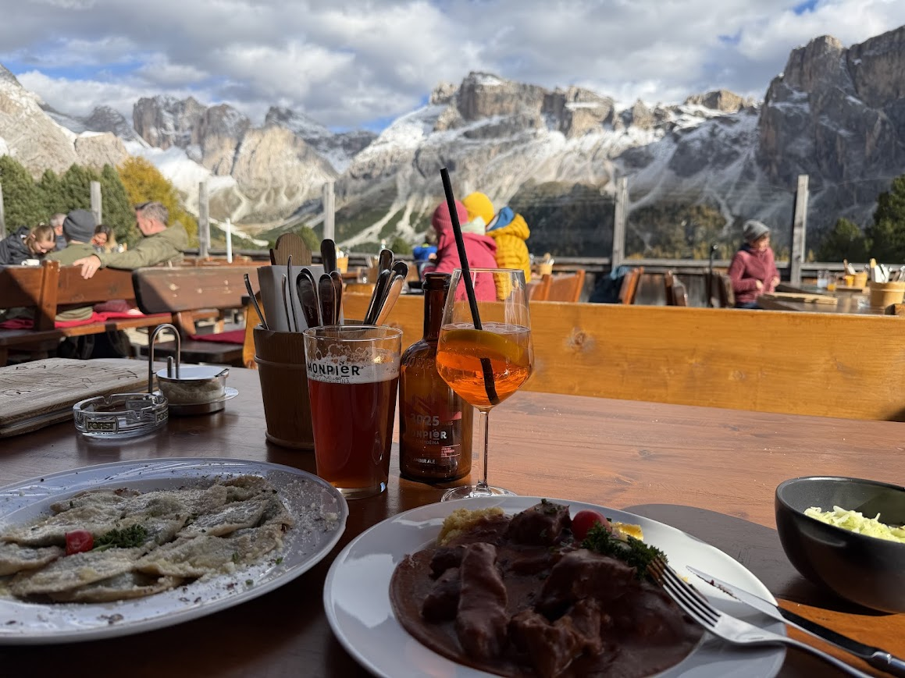
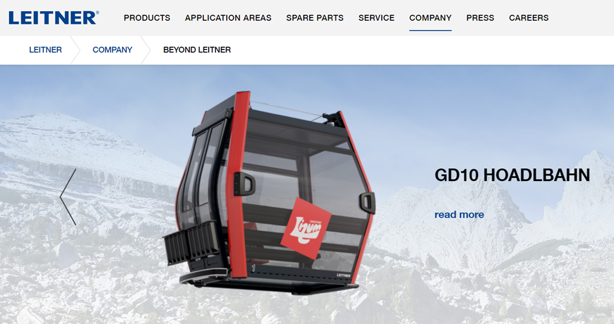
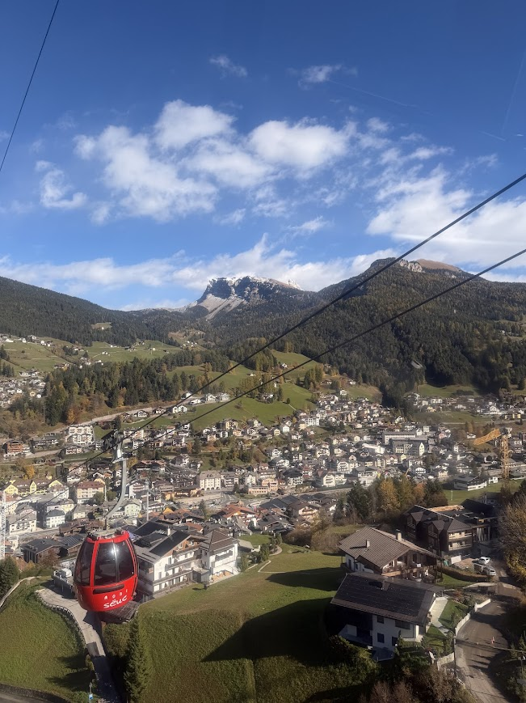
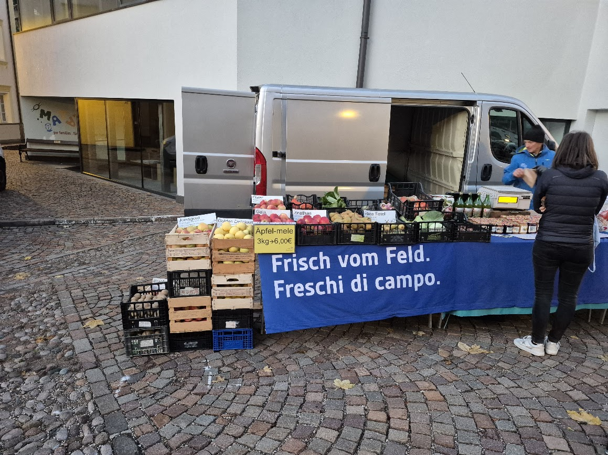
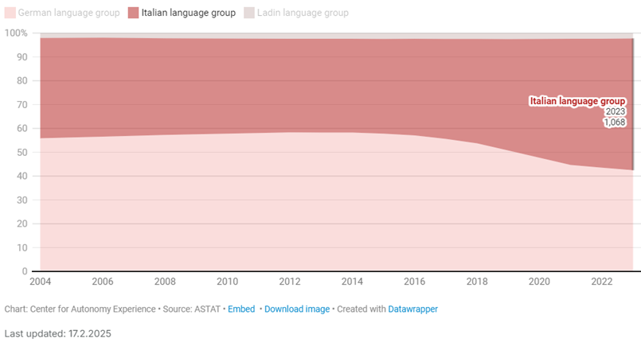
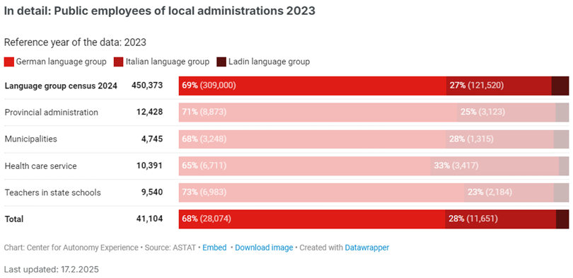
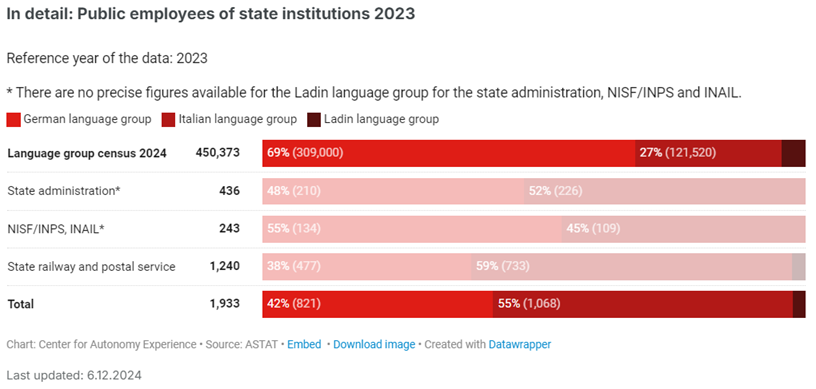
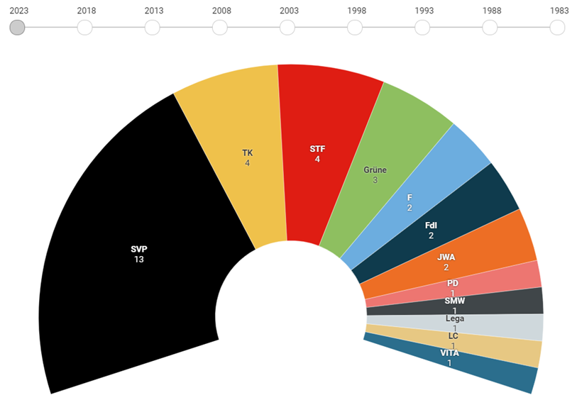

남티롤(Südtirol) 이야기 (10) - 미봉된 갈등
게시: 2026-07-23T06:30:04+09:00
1969년의 남티롤 패키지 협약(독일어로 파켓(Paket))이 이루어져 남티롤의 세수 90%를 남티롤 내에서 집행하게 되었다고 해도, 그 세수 자체가 보잘 것 없으면 오히려 안 좋은 결과를 낼 수도 있었습니다. 가령 세수 100%를 시칠리아 섬에서 집행하기로 했던 시칠리아 광역주의 경우, 그 세수로도 부족하여 결국 중앙정부에서 보조금을 받아야 광역주 자치정부가 유지될 수 있는 형편입니다. 1969년 당시 남티롤도 마찬가지였습니다. 기본적으로 산악지대에서 농업이 잘 될 턱이 없었습니다. 역사적으로도 그랬지만, 당시 남티롤은 부유한 지역이 아니라 오히려 이탈리아 평균보다 가난한 산악 농업지대였습니다. 그러나 행운은 외부에서 오기도 합니다. 1960년대 서독, 오스트리아, 스위스 등 독일어권 경제가 급속히 좋아지면서 알프스 관광 수요가 폭발했던 것입니다. 남티롤은 독일어권이라는 언어적 특성과 돌로미티라는 천혜의 경관, 그리고 오스트리아와 스위스, 이탈리아 사이에 끼어있다는 지리적 근접성 덕분에 그 관광 수요의 상당 부분을 끌어올 수 있었습니다. 특히 남티롤은 독일어를 쓰면서도 이탈리아의 싼 물가와 맛있는 음식, 온화한 기후를 즐길 수 있는 최고의 관광지였습니다. 그런 관광 수요의 유치에는 이탈리아 중앙정부의 투자도 한몫 했습니다. 1970년대 초, 이탈리아와 오스트리아가 공동의 투자를 통해 전통적인 오스트리아-이탈리아 사이의 통로였던 브래너 고갯길 (Brenner Pass)에 고속도로와 철도를 대대적으로 확충했던 것입니다.

(남티롤은 오스트리아식으로 깔끔하면서도 이탈리아식으로 맛있는 음식을 먹을 수 있는 곳입니다. 그런데 차마 저렴하더라는 말은 못하겠군요. 비쌌어요.)

(저 음식은 오르티세이의 마우리츠 켈러라는 음식점에서 먹었습니다. 친절하고 깔끔한 곳이었어요. 맛도 있었고요.)

(여긴 콜라이저(Col Reiser) 언덕 위의 식당입니다. 이런 곳에서 매일 밥을 먹는다면... 그것도 지겹겠지요? 저 왼쪽의 납작만두 비슷한 음식은 라비올리가 아니라 슐루츠크라펜(Schlutzkrapfen)이라는 독일식 음식입니다. 맛은... 그냥 그랬어요.) 이렇게 관광 수입이 쏟아져 들어오기 시작하자, 남티롤 세수의 90%를 남티롤에서 집행한다는 파켓 협약이 비로소 위력을 발휘하기 시작했습니다. 남티롤 자치 정부는 물 들어 올 때 노젓는다고 스키장과 호텔 등 관광시설에 세금을 들여 집중투자했을 뿐만 아니라 남티롤에서 거의 유일하게 잘 되던 농산물인 사과 농업 육성에 투자했습니다. 즉, 자치 정부 지원을 받은 협동조합을 통해 대형 저장고를 짓고 유통망을 단일화하며 '남티롤 사과(Südtiroler Apfel)'라는 고유 브랜드를 키워, 유럽 전역에 비싸게 팔기 시작한 것입니다. 덕분에 현재 유럽에서 유통되는 사과의 10개 중 1개, 유기농 사과의 3개 중 1개가 남티롤산일 정도로 고부가가치화에 성공했습니다. 남티롤 농민들이 부유해지자 남티롤에 세금이 쌓이기 시작했고, 이는 다시 지역 산업에 투자할 자금이 되었습니다. 가령 세금으로 남티롤 관광 시설에 투자하다보니 자연스럽게 산악 및 설상(雪上) 기계공업이 발달하게 되었습니다. 라이트너(Leitner) 그룹은 지금도 케이블카 제조에 있어 세계적 강자이며, 최근에는 풍력에너지로 사업을 확장하고 있습니다. 또 테크노알핀(TechnoAlpin)사는 인공 제설 기술에 있어 세계 시장 점유율 1위 기업이며, 프리노트(Prinoth)사는 설상차(스노우캣) 및 궤도형 산업차량 제조업에 있어 세계적인 기업입니다. 또한 남티롤의 농산물을 활용한 식품산업도 발전했는데, 가령 우리나라에서도 쉽게 볼 수 있는 웨하스 및 초컬릿 기업인 로아커(Loacker)도 남티롤 수도인 볼차노에서 창업되었습니다. 이러다보니 남티롤, 즉 볼차노현은 이탈리아 전체에서 가장 부유한 자치현이며, 2024년 실업률은 2%에 불과할 정도로 완전고용에 가까운 상태입니다.

(라이트너사의 홈페이지입니다.)

(알페 디 시우시(Alpe di Siusi) 올라갈 때 탔던 케이블카입니다. 이제 보니 저 케이블카 만든 회사가 라이트너였군요,) 그러나 이렇게 완벽해 보이는 남티롤에도 문제가 많습니다. 일단 1969년 파켓 협약에 따라, 공공부문 채용을 독일어, 이탈리아어, 라딘어 인구 비율에 따라 기계적으로 배분하는 민족별 비례 할당제(Proporz)가 엄격히 실시되고 있는데, 이는 필연적으로 비효율을 낳았고 결국 공공부문 비대화라는 결과를 낳았습니다. 또 사용 언어에 따라 초등학교부터 독일어 학교와 이탈리아어 학교, 라딘어 학교로 나누어져 교육을 받게 되는데, 이는 필연적인 '분리'로 이어져 지방의 통합을 어렵게 만들고 있습니다.

(노점에서 사과를 파는 아저씨도 저렇게 철저하게 이중 언어 표기를 하고 있습니다. 저게 꼭 효율적이진 않겠지요. 독일어나 이탈리아어를 몰라도 대충 읽을 수 있을 것 같지 않습니까? Fresh from the field 뭐 대충 그런 뜻 같습니다. 사과는 독일어로 Apfel, 복수형으로는 Äpfel이랍니다. 이탈리아어로는 Mela, 복수형으로는 Mele입니다.)
가장 좋은 예는 국가 대항 축구 경기가 열릴 때입니다. 남티롤은 아직까지도 독일계가 훨씬 더 많은 편인데, 오스트리아-이탈리아는 물론이고, 독일-이탈리아의 경기가 열릴 때 남티롤의 독일계 주민들은 당연하다는 듯이 오스트리아와 독일을 응원한다고 합니다. 이는 이탈리아계 남티롤 주민들은 물론 타지방 이탈리아인들로부터 '도대체 쟤들 뭐지?'라는 의아함과 분노를 살 수밖에 없는 일입니다.
(유로 2020에서의 이탈리아-오스트리아 경기 모습입니다. 다행인지 불행인지 이번 월드컵에 오스트리아는 나왔으나 이탈리아는 안(못) 나왔습니다. 찾아보니 유럽지역 예선에서 오스트리아에게 져서 못 나온 건 아니더군요.)
이런 상황 속에서는 특히 어느 쪽 인구가 늘어나느냐가 중요합니다. 그런데 남티롤에서는 이탈리아계가 소수이므로 독일계에 밀려 역차별을 받는다는 설움을 느끼는 경우가 많았고, 그래서 특히 젊은이들이 이탈리아 본토로 떠나가버려 이러다가 이탈리아계가 남티롤에서 줄어드는 것 아니냐는 전망이 있기도 했습니다. 그러나 최근에는 이탈리아계가 눈에 띄게 증가하고 있습니다. 독일계 토박이들이 터를 꽉 쥐고 있는 농촌에서는 어쩔 수 없이 독일계가 더 많다고 하지만, 원래부터 볼차노나 메리노 등의 대도시에는 이탈리아계 비중이 농촌보다는 높은 편이었습니다. 그러다 최근 조사에서 남티롤 제2의 도시 메라노(Meran)는 처음으로 이탈리아계 인구가 49.06%에서 51.37%로 늘어나 50.47%에서 48.26%으로 줄어든 독일계를 누르고 다수 민족이 되는 일이 일어났습니다.

(최근의 이탈리아계 인구 증가를 보여주는 그래프입니다.) 여기엔 여러가지 이유가 있겠습니다만, 기본적으로 남티롤의 경제가 상대적으로 더 좋다보니 이탈리아 본토에서 오는 인구가 있기 때문입니다. 특히 유락 연구소(Eurac Research), 볼차노 자유대학교, 클라우디아나(Claudiana) 보건전문대, NOI 테크파크 등 볼차노에 밀집한 연구·교육기관들이 이탈리아 전역에서 이탈리아계 인재를 적극적으로 끌어들이고 있습니다. 거기에다 유럽 전체를 불안하게 만드는 문제, 즉 제3세계로부터의 이민자 문제도 있습니다. 특히 요식업이나 슈퍼마켓 체인 등에서 독일어를 구사하지 못하는 직원 비중이 눈에 띄게 늘고 있다고 합니다. 문제는 그런 인구 조사는 자기신고제라서, 실제 모국어가 아니라 본인이 어느 계열로의 귀속을 선택하는 방식인데, 그런 제3세계 이민자들이 이탈리아계로 자신을 신고하는 경우가 많다는 주장도 있습니다. 그 외에, 독일계조차 공공부문 취업 등에서 상대적으로 유리한 이탈리아계를 전략적으로 선택하는 경우도 꽤 있다고 합니다.

(남티롤의 지방직 공공부문은 민족별 쿼터제가 엄격하게 지켜지고 있습니다.)

(같은 남티롤 내에서라도, 국가직 공공부문, 가령 우편이나 철도 부문은 아무래도 이탈리아계가 더 많네요.) 이런 변화와 격해지는 민족 감정은 자연스럽게 정치로 이어지게 됩니다. 남티롤 파켓 협정을 이끌어낸 마냐고는 앞서 설명드린 대로 1991년까지 무려 34년 동안이나 SVP (Südtiroler Volkspartei, 남티롤 인민당)를 부동의 남티롤 제1정당으로 이끈 뒤 명예롭게 퇴진했고, 그가 사망한 이후에도 남티롤의 국부 대접을 받고 있습니다. 하지만 이제는 SVP가 더 이상 남티롤 제1당이 아닙니다. 요즘 남티롤의 정치 분위기는 한마디로 수십 년간 이어진 일당 독점 체제의 균열과 우파 포퓰리즘의 난립으로 요약할 수 있습니다. 민족 갈등을 종식했다던 대타협 체제가 무색하게, 최근 들어 양쪽 민족 진영 모두에서 강경 우파 세력이 득세하고 있습니다. 독일어계는 이탈리아로부터의 완전한 분리독립과 오스트리아 편입을 주장하는 강경 민족주의 정당(STF)과 코로나 규제 반대 등을 앞세운 극우 세력(JWA)이 약진했고, 이탈리아어계도 그에 대한 반발과 함께 이탈리아 본토의 우경화 흐름을 타고, 멜로니 총리가 이끄는 이탈리아 민족주의 성향의 극우 정당(FdI)이 힘을 얻었습니다. 거기에 더해, 젊은 세대를 중심으로 언어와 민족을 중시하는 해묵은 논쟁보다, 과잉 관광으로 인한 부동산 가격 폭등, 물가 상승, 환경 파괴, 이민자 유입 같은 당장 눈앞의 현실적 문제에 대한 불만이 폭발하고 있습니다. 초민족적 공존을 외치는 녹색당(Grüne)이 꾸준히 표를 얻고 있는 것도 이러한 분위기를 대변합니다.

(2023년 선거 결과입니다. SVP는 독일계 중도우파, STF는 분리독립을 꿈꾸는 독일계 우파, TK는 독일계 중도 자유주의, F는 독일계 우파 포퓰리즘, JWA는 백신 반대를 외치는 독일계 극우 포퓰리즘, FdI는 이탈리아계 극우파, PD는 이탈리아계 중도좌파, Lega는 이탈리아계 우파 포퓰리즘, Grüne(녹색당)은 좌파 생태주의입니다.)
(세체다(Secëda) 산 위에 있는 예수상입니다. 작년 가을 여행 때 직접 찍은 것입니다. 이렇게 기독교라는 같은 믿음과 문화를 공유하는 사람들끼리도 갈등이 심한데, 거기에 종교와 문화, 심지어 인종까지 다른 사람들끼리 섞여 사는 것은 확실히 쉽지 않은 문제입니다.) 게다가 이탈리아 본토의 문제도 심각합니다. 푸틴의 우크라이나 침공, 중국의 부상, 트럼프의 MAGA가 지구촌을 뒤흔드는 가운데 이탈리아는 고질적인 남북간 지역격차 문제에 더해 재정난도 겪고 있습니다. 그런 상황 속에서 세수의 90%를 자기들끼리 써대면서 툭하면 '오스트리아로의 합병'을 떠들어대는 남티롤이 이탈리아 중앙정부에게 곱게 보일 리가 없습니다. 실제로 과거 로마의 헌법재판소 판결 등을 통해 남티롤의 자치권은 점진적으로 깎여온 편인데, 최근 로마의 멜로니 우파 연립정부와 남티롤 자치정부의 관계는 그렇게 침해된 자치권을 복원하려는 협상과 중앙정부 차원의 법적 규제 강화가 동시에 맞물려 있는 복잡한 상황입니다. 실은 이 글을 쓰게 된 계기가 있습니다. 작년 가을 남티롤 여행을 하면서 그냥 '여기는 사실상 오스트리아라서 독일어가 더 많이 쓰인대'라고만 알고 있던 제가 아무 생각없이 호텔 직원에게 구텐탁(Guten Tag)이라고 웃는 얼굴로 인사를 하니, 그 직원은 눈에 띄게 굳은 얼굴로 차오(Ciao)라고 대꾸를 하더라고요. 그래서 대체 이 동네 분위기가 어떤 것인가 궁금하여 찾다보니, 생각보다 피와 눈물이 많이 섞인 골치 아픈 역사를 가지고 있더군요. 지금 생각해보면 그냥 중립적인 Hello로 인사하는 것이 가장 좋았을 것 같습니다.